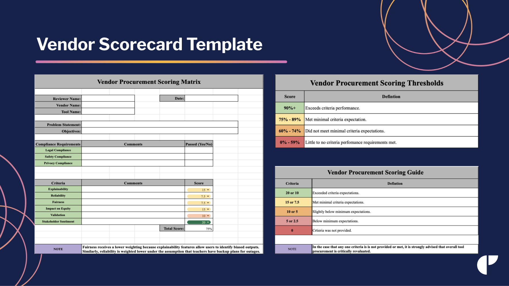
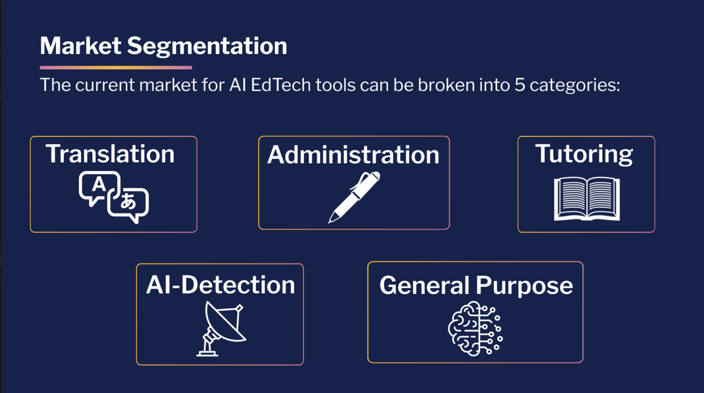

Led a team of nine policy fellows to develop an AI procurement and evaluation framework for New York City Public Schools. Delivered a market segmentation analysis, stakeholder mapping, and an original AI Procurement Scoring Matrix to support equitable, evidence-based EdTech investment decisions at scale.

